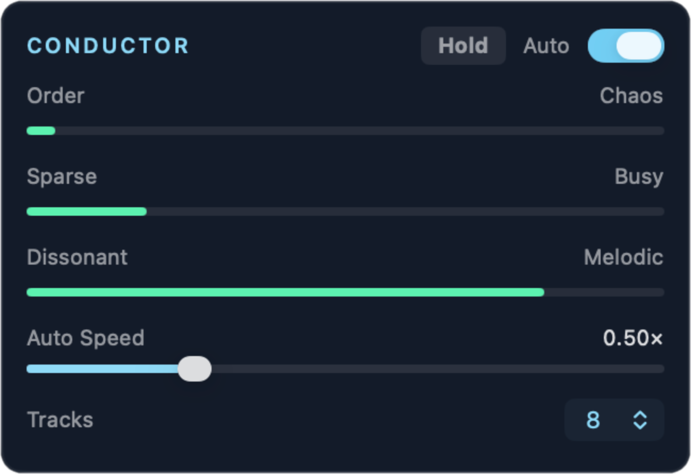

Conductor

The conductor sets the overall mood of the composition, but doesn't make any sound on its own. It chooses values for each of its three axes, then the tracks use these values to guide their own decisions. The conductor can also adjust the effects (see Motion) and, if you let it, select the tuning.
The three axes
The values of the three conductor sliders impact the system as follows:
| Axis | Low end | High end |
|---|---|---|
| Order ↔ Chaos | Tracks change infrequently. Patterns repeat. LFOs are slow. Shape sequences (Up, Down) are more frequent. | Tracks change frequently and changes are more dramatic. Sequences are random or mutate. LFOs are faster and deeper. Resonance and pitch range increase. |
| Sparse ↔ Busy | Fewer tracks play. More drones and swells. Slow step divisions. Fewer notes in each pattern. | More tracks play. More sequences. Fast step divisions. More notes in each pattern. Brighter filters. |
| Dissonant ↔ Melodic | More Noise tracks. Inharmonic timbres: inharmonic oscillator ratios and wavetable banks, more ring modulation, warp, and feedback. See How the mood shapes the sound. More wrong notes and more detune. Ratio sets with high prime limits. | Consonant timbres. Scale notes and simple ratios. Less detune. More notes on the root. |
Auto mode
Use the Auto switch at the top of the Conductor panel to decide who's in control.
- Auto on. The conductor moves the axes by itself. The axes show bars, not sliders. Each axis wanders slowly. At random times (from 30 seconds to 3 minutes) the conductor selects a new target mood, and the axes glide to it over some minutes. Sometimes a target is at an extreme end of an axis. This gives slow drift and also clear changes of section.
- Auto off. The axes are sliders. The conductor goes to your values in approximately 0.3 seconds. When you turn Auto off, the sliders start at the values that play now, so the sound does not jump.
Auto Speed (0.25× to 4×) sets how fast the conductor moves in Auto mode. At 0.5×, the moods last twice as long. This control has no effect when Auto is off.
Hold
When you like what you hear and want to keep it going, click the Hold button at the top of the Conductor panel. The button becomes amber.
While Hold is engaged:
- The tracks make no decisions. Each track keeps its sound, pattern, and active or resting state. The track's decision timer stops and becomes amber.
- The conductor stops changing values. Anything affected by the conductor, such as tuning, stops as well.
- The music continues to play. Random and Mutating sequences continue to make new notes and to mutate. Drones, LFOs, and pitch drift continue to move.
- You can edit the tracks, mixer, and effects as usual.
Click Hold again to release it. The conductor and decision timers continue from where they stopped.
Tracks
The Tracks menu (1 to 8) sets how many tracks can play. For example, 4 means that tracks 1–4 play and tracks 5–8 are silent.
- Disabled tracks do not count for Solo.
- Disabled tracks continue to run silently. When you turn a track on again, it continues from its current position.
Antarctica always keeps at least one enabled track playing.